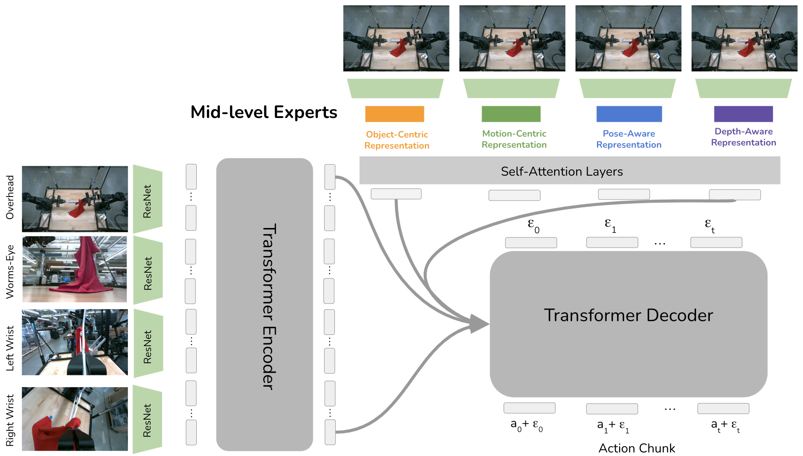
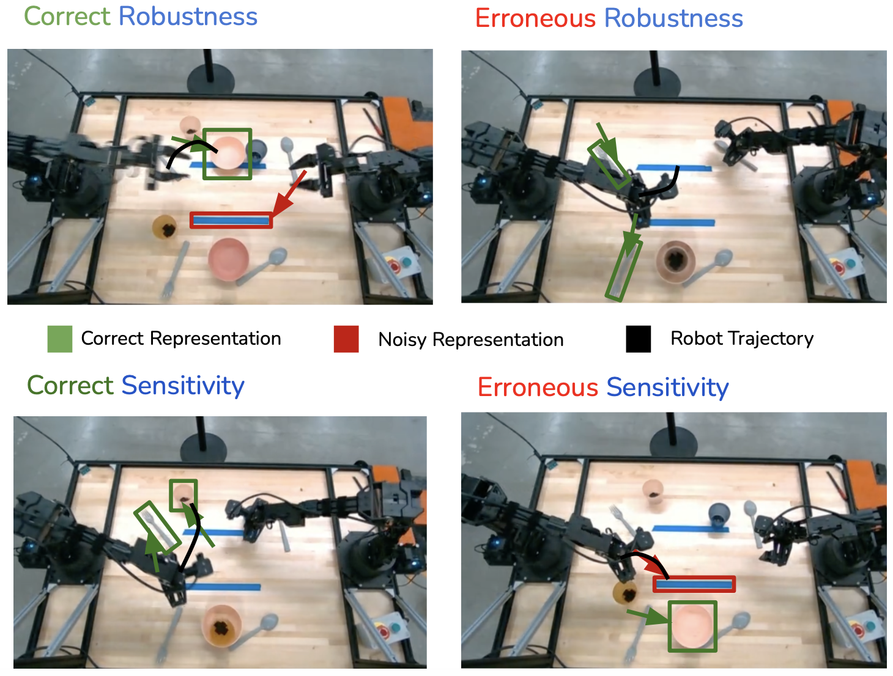
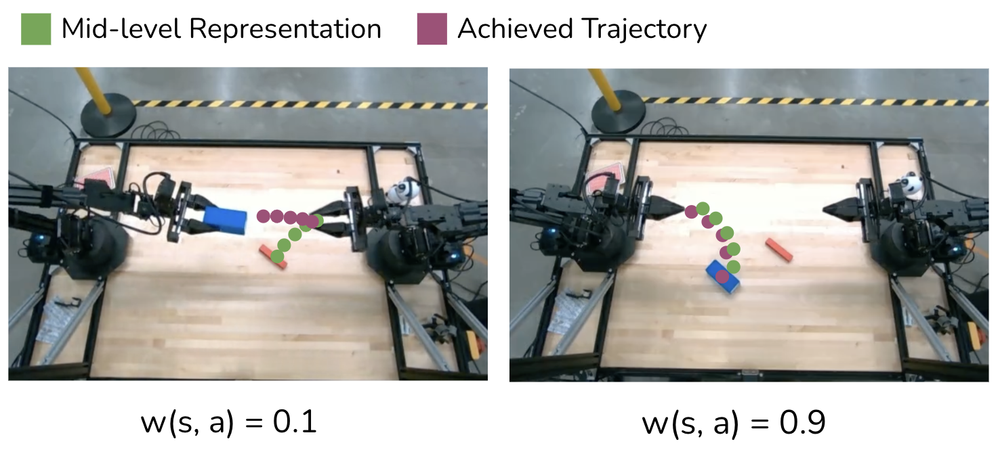
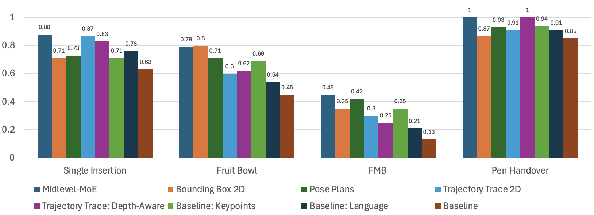
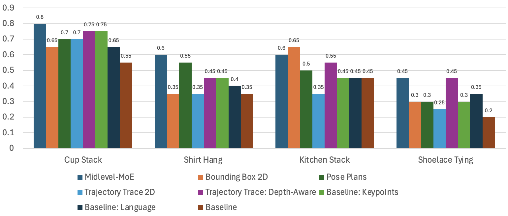
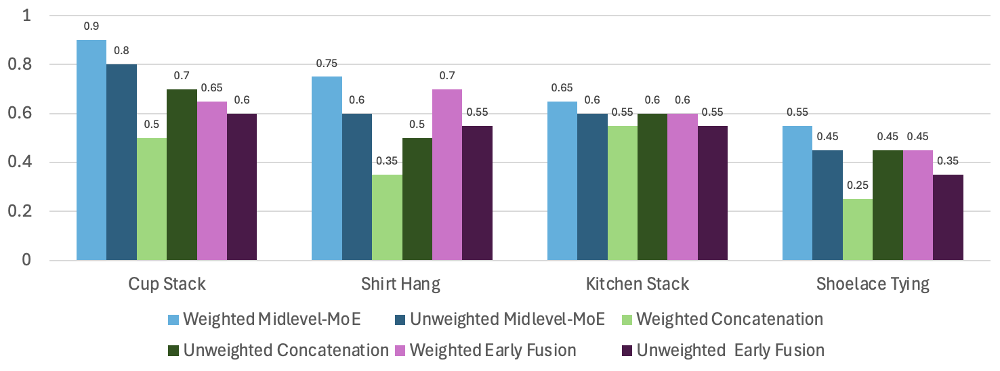

Mid-Level MoE: Preliminary Results
Demonstration of spatially-grounded mid-level representations for robot generalization across simulation and real-world dexterous bimanual manipulation tasks.
Demonstration of spatially-grounded mid-level representations for robot generalization across simulation and real-world dexterous bimanual manipulation tasks.
In this work, we investigate how spatially-grounded auxiliary representations can provide both broad, high-level grounding, as well as direct, actionable information to help policy learning performance and generalization for dexterous tasks. We study these mid-level representations across four critical dimensions: object-centricity, motion-centricity, pose-awareness, and depth-awareness.
We use these interpretable mid-level representations to train specialist encoders via supervised learning, then use these representations as inputs to a diffusion policy to solve dexterous bimanual manipulation tasks in the real-world.
We propose a novel mixture-of-experts policy architecture that can combine multiple specialized expert models, each trained on a distinct mid-level representation, to improve the generalization of the policy. This method achieves an average of 11% higher success rate over a language-grounded baseline and a 24% higher success rate over a standard diffusion policy baseline for our evaluation tasks.
Furthermore, we find that leveraging mid-level representations as supervision signals for policy actions within a weighted imitation learning algorithm improves the precision with which the policy follows these representations, leading to an additional performance increase of 10%.
Our approach leverages four key types of mid-level representations that capture critical spatial and geometric properties for dexterous manipulation:

Policy Architecture. Four images are passed into a transformer encoder. Each mid-level expert processes the image to generate specialized representations, which are combined through cross-attention.

The sensitivity-robustness tradeoff. Policies need to follow their mid-level representations while being robust to erroneous noise.
We identify a fundamental tradeoff between the sensitivity with which a robot follows its representations and its robustness to errors in these representations. Our architecture design balances:

Self-Consistency. We weight demonstrations based on how well the robot's trajectory matches its mid-level representation.
We introduce weighted imitation learning with self-consistency weights that emphasize demonstrations where the policy's actions align well with the mid-level expert outputs. This approach:

Simulation Results. Mid-Level MoE achieves consistently high performance across different tasks by leveraging task-specific representations.
Different representations excel at different tasks:

Real-World Results. Clear differences in the benefits that different representations provide for real-world dexterous manipulation tasks.
Our method demonstrates strong performance across diverse real-world scenarios:

Architecture and Self-Consistency Ablation. Weighted Mid-Level MoE achieves 10% higher success rate than unweighted across real-world tasks.
Our analysis reveals:
@article{yang2024midlevelmoe,
title={Bridging Perception and Action: Spatially-Grounded Mid-Level Representations for Robot Generalization},
author={Yang, Jonathan and Fu, Chuyuan Kelly and Shah, Dhruv and Sadigh, Dorsa and Xia, Fei and Zhang, Tingnan},
year={2024},
journal={arXiv preprint}
}